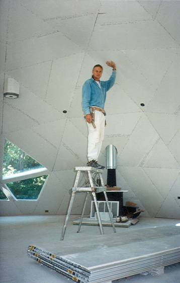
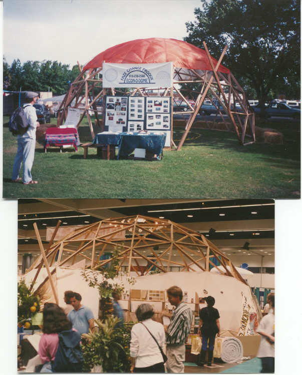
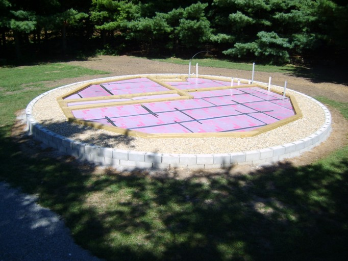
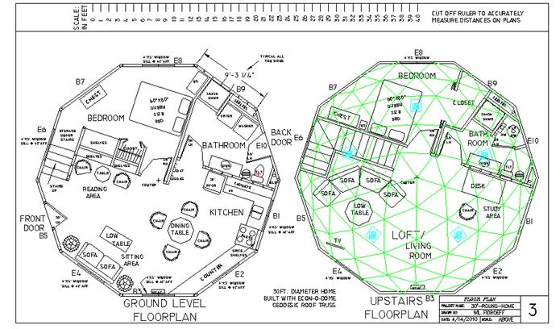
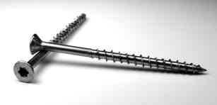
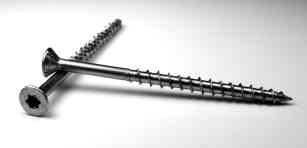

Interview: Econodome
An Interview with Wil Fidroeff of www.econodome.com by Dome Times & Wil Fidroeff
Wil Fidroeff possesses an imposing, confident swagger trained by years of building and improving dome construction methods. His independent attributes compel him to ask why and then find a solution. Capped with graying hair, Wil has made it his life’s work to create design solutions for dome home building problems.
The result has become not just a better dome, but, a better home. It is Wil’s contention that the most common rectilinear (boxy) home needs many design improvements, thus a comprehensively designed dome home—one that can easily accommodate conventional rectangular items such as: windows, doors, beds, fiberglass showers, kitchen cabinets, and conventional 4′ x 8′ construction panels. The EconOdome frame kit and recommended building methods are the result of his personal home design improvement marathon that has lasted more than 30 years.
Dome Times: Wil, what can you tell us about yourself and your involvement with building dome homes?
Wil’s response: I have been designing and building homes of different types nearly all my life. During the last 30 years I have concentrated on helping people to build dome homes. My goal has always been to design and help people to build better and more economical homes.
A dome home, due to its shape, is naturally storm safer and more energy efficient. Yes, there are some problems with some dome home designs and the methods used to build them. And, yes, there are problems with some conventional home designs and the methods used to build them.
What is the solution? I feel that many of answers lie in knowing what works and what does not work, regardless of the shape of the home, with all design criteria considered. We all know that without knowledge and experience, any attempt to tackle a large complicated project without good plans, will most probably fail.
During the past 40 years I have helped hundreds of people to construct and improve both dome homes and the more common boxy shaped homes. During that time I have learned what works and what does not work. Many of the people that we supply with EconOdome kits want to try new products and/or ways to do some things.
Most folks let me know what happens—good and/or bad. A dome home can be built in a manner similar to the building of a box shaped home. However, just as we can alter the way we build a box shaped home, we can also improve upon the way we build dome homes. And we can do this in ways that meet many design criteria as well as being structurally sound and architecturally exciting.
Dome Times: What makes the EconOdome design different from other dome manufacturers?
Wil’s response: There are several dome home design improvements unique to the EconOdome. First of all, the EconOdome frame kit is modified on the lower perimeter to have large vertical trapezoid shapes that are framed to accept conventional doors and windows. You might say that the EconOdome frame kit is modified to include a vertical riser wall that is integrated into and between the triangles on dome surface.
This allows the dome to be built without the need for extensions. Having vertical surfaces integrated into the dome surface does not compromise the structural integrity of the dome as would removing triangles at the lower perimeter to install an extension that is open to the dome interior. Having to build an extension on a dome to create a vertical surface at the outside of the extension complicates the building process and makes a dome home more expensive to build.
Secondly, the EconOdome frame kit has ten-equal sides. This makes building the foundation, floor, and perimeter riser walls much easier. The ten corners of the foundation and floor are all the same distance from the center point.
Thirdly, the EconOdome frame kit has all the structural components (struts) precision cut with double compound mitered ends and all the strut ends are pre-drilled for easy and accurate assembly. 30 high tech stainless steel #10 screws stitch each 6-way dome connection securely together. In addition, 3 stainless steel straps criss-cross every 6-way node connection. The stainless steel screws and criss-crossing straps work together to form a very strong hub connection that will never get rusty and lose tensional holding ability.
And fourthly, a unique feature of most dome homes built with EconOdome kits is the UL approved cladding and waterproofing system that is used to cover and seal the exterior surface. The exterior surface is clad with DensDeck Prime Roof Board and/or Hardipanel composite cement siding. The surface is covered and sealed in stages from the top downward. This allows people to have a place to stand on the dome frame while working on the dome. Installing and sealing the surface from the top downward creates an umbrella that keeps building materials dry during the construction process. The umbrella first covers the top of the dome and then grows larger as the umbrella gets closer to the ground.
Dome Times: How did you come up with your design?
Wil’s response:A long time ago at the beginning of the 1980′s I began “playing” with domes and how to connect them.
At the time, all wood framed domes that I was aware of were either made with hubs and struts or bolted together triangle panels with frames.
Structurally speaking, a dome constructed with bolted together triangles is neither a braced frame (triangles are not connected at end points) nor a compound curved shear wall (triangles not connected to a common strut at seams). With a dome constructed of bolted together triangles, the tensional forces must translate via the bolts.
Admittedly, a bolted together dome comprised of prefab sheeted and framed triangles is also connected via nails and or screws that join the struts lengthwise. However, the problem is that wood expands and contracts in width, so, there is the possibility that drywall seams on the interior of the dome could crack. And, if the exterior is sealed with an elastomeric sealer, then there is a greater possibility that leaks could develop at the seams where the frame and panels join.
Domes constructed with metal hubs have a void under the tips of the triangles, where the triangles are most fragile. This can be a concern for the sheet rock on the interior and the exterior covering triangles. And there is the expense of a manufactured hub.
 So, I will go out on a limb here and relate some personal history that resulted in the evolution of the EconOdome frame kit connection method. I was trying to figure out how to make a more elegant hub, when I hit on the idea of just cutting the struts to fit at the end points. At the time this seemed to be a real revelation to me. So, my quest then became how to compute the strut end angles and how to best connect the struts and hold the strut ends together tensionally.
After deciding to stitch the ends together with screws, selecting the best screw was my most difficult quest. I assembled pre-cut EconOdome frame kits at about 30 public events in many places all across the USA. The photos here show two the domes I built at public expos in California.
At each of the public events, the domes were assembled using different types of screws. It was a way for me to do some R&D and also do some marketing. This was before folks had floppy discs and websites.
Finally, I located a screw that would go in easily with a rechargeable drill and also not split the strut ends. More recently, we have upgraded to all stainless steel connectors and are using a 316 (salt water safe) stainless steel 3 inch #10 screw that has threads designed to inhibit splitting and reduce insertion torque.
And, we are now supplying all EconOdome frame kits with stainless steel straps and 1.5″ #10 stainless steel nails to attach the straps. The metal straps criss-cross each of the nodes to provide additional tensional force across the nodes.
In addition, we are now supplying all 38.5′ diameter and larger size EconOdome kits with 12.5 gauge wires that girdle the dome just above the doors and windows at the lower perimeter. The wires are twisted together by twisting lag bolts and attaching the lag bolts to the dome frame to keep the wires tightly twisted. The twisted wires form a permanently tensioned cable girdling the dome where outward forces could be a problem in a severe earthquake.
And other things happened to help me improve the design of EconOdome kit. Near the end of his life Buckminster Fuller told a close working associate, John Warren, that the best geodesic dome geometry to use for building dome homes and commercial domes was the four frequency truncateable. This dome geometry has 160 triangles on a hemisphere and level line of connections at the hemisphere and at the second floor level.
This makes it easier to build both the main floor and the loft level floor. Having smaller components also makes handling the construction materials easier and it makes the dome more round. Buckminster Fuller invented and patented the four frequency truncateable geodesic geometry. John Warren came to my home and insisted that I consider using the 4V truncateable geodesic geometry. The 4V truncateable geodesic geometry became the basis for the EconOdome design.
At the time, all wood framed domes that I was aware of were made with hubs or bolted together triangles.
Dome Times: What do you say to people who report talking with business associates who say that investing in building a Dome Home is not the thing to do with the US economy in a downturn?
Wil’s response: Having a pessimistic attitude is a self fullfilling prophecy. You get what you think you are going to get. Personally, I have found that there are many people out there that want to live in dome homes. Just this afternoon I was talking with a woman who was distraught because someone else had just purchased a dome home that she really fell in love with and was going to buy. I helped build that dome home in Colorado eleven years ago.
I have been so busy drawing plans, talking with clients, and helping to manufacture EconOdome kits that I have not yet taken my fishing boat out all spring and summer. The benefits of living in a dome home are numerous. There is the safety aspect, the economy of building a diy kit home, and the uniqueness of a dome home that sets it apart–and in a good way.
If you are dealing with people who are not open to inovation, not open to new and better ways of building homes, then I would choose different business associates. Dome homes built with precision cut triangulated frame kits and enclosed with precision cut triangular panels are safer in storms, more durable, easier to maintain, more energy efficient, and a joy to be in and live in. Technology marches on in every other sector of our lives.
If we are going to succeed as a species on this planet, we also need to look at improving the way we build our homes. Boxes are okay for putting stuff in, but people deserve something better to live in. What design criteria are applied to the building of a conventional box shaped home? Many dome homes are comprehensively designed to be and do as much as is possible with architecture. Doing what we’ve always done will only get us to where we are. Where do we go from here? Evolve or go extinct.
And now to more completely explain some cost cutting and labor saving construction methods that are possible when building with EconOdome kits:
There are many ways to build a foundation and floor. A main floor built above a crawl space allows for plumbing and electrical work to be done under the floor after the home is enclosed. A home of any shape, including a dome home can utilize many foundation types. Shown below is a ten-sided Mesa Base foundation & floor that is ideal for the installation of a radiantly heated floor when building a 30′ diameter dome home with an EconOdome frame kit.
The Mesa Base is comprised of 12″ of 1″ river rock retained by a cylinder of concrete block. The circular draining retaining wall is 3 feet larger in radius than the 15′ radius EconOdome structure.
The 6 cubic yard concrete floor resting above the river rock is retained by a three lapping layers of treated 2×8′s that also rest on the river rock. The treated wood perimeter is locked to the concrete floor via lag bolts that are inserted into the inside perimeter of the center layer of 2×8.
Rebar, wired to lag bolts, is also installed on the entire inside perimeter of the concrete floor sections. There is a central bearing wall that is supported by three layers of treated 2×8′s.The following statement could really be of importance to folks living in fire prone areas.The building will be covered with fireproof siding and roofing and the Mesa Base keeps the vegetation away from the building.The lower floor is enclosed with 9 ft. high perimeter walls.
A second story floor constructed with 2×8 joists will support the 30′ 2×4 EconOdome frame kit that will be assembled using step ladders. The home is being built on the site of a burned home without any foundation excavation. The old existing concrete foundation under the ground is too massive to permit removal. And besides that we wanted to build as economically as possible using the Mesa Base.

Exterior triangle panels are comprised of DensDeck Prime Roof Board with a laminated layer of one inch thick foil faced R-7.2 rigid insulation. The exterior triangle panels are securely attached to EconOdome frame kits with galvanized cap nails having a one inch diameter head (see above left).
Faze Change Produx, as a dealer of Simpson Strongtie connectors, supplies all EconOdome frame kits with hi-tech 3 inch long, #10, 316 stainless steel, six-lobe drive, screws. These screws are designed to minimize wood splits and required insertion torque. Every 6-way connection node on assembled EconOdome frame kits is securely stitched together with 30 of these screws.
Tensionally EconOdome frame kits are also secured via criss-crossed stainless steel straps and twisted wire cabling. As wood does not change in length due to temperature and humidity variations EconOdome frame kits do not expand and contract. This fact, and the redundant tensional connections, allow for reliable exterior waterproofing and crack free interior drywall finishing.
 

- Basic EconOdome frame kits are sized and blocking within triangles is positioned within triangles to optimize the use of sheet goods and to allow for easy installation of sheetrock on the dome walls and ceiling.
- Recessed edges are butted together on each triangle so the paper drywall tape can be easily covered.
- The paper tape on the drywall seams also covers all exposed screw heads.
- The smaller pieces of drywall are easy to install on the dome walls and ceiling.
The interior finish on the dome ceiling has a soft quilted look. Click to enlarge

Click to enlarge
The lower perimeter of EconOdome kits is modified to include vertical surfaces for doors and windows.
The exterior of the home above, built in San Diego, is being covered with non-combustible composite cement Hardipanel. Most homes built with EconOdome frame kits include a layer of rigid insulation outside the plywood sheathing and under the Hardipanel. The small cracks at the seams where the panels join are filled with an easy to apply insulating foam that seals the gaps between the panels. This construction method creates continuous sealed layer of insulation that prevents condensation from forming in the wall/roof cavity.
The expanded foam is easily cut flush to the exterior surface prior to sealing the seams with polyester cloth saturated with elastomeric. After the seams are sealed using a paint brush to smooth the cloth tape, recycled rubber roofing is applied with a paint roller to both protect and hide the cloth tape. A final UV tolerant coating is applied with a paint roller on an extension pole. The final coating of elastomeric sealer may be tinted to any desired color or remain white as shown in the above photo.
Click to enlarge
The photo here shows the interior of the dome home built is San Diego, California when it was under construction. This 38.5 feet diameter dome home was built with an EconOdome T-Beam frame kit.
With a T-Beam frame kit the triangle panels are installed from outside the dome and retained by the precision cut interior trim. The exposed interior trim on the dome ceiling is screwed and glued to the inside edge of the 2×6 dome struts.
The exposed interior trim is routered and sanded at the Faze Change Produx EconOdome kits shop. The interior trim is most easily finished with a 50/50 mixture of linseed oil and mineral spirits. The level line of exposed trim becomes the base trim for the loft level living space. The walls at the lower perimeter are conventionally framed to allow for conventional doors, windows and electrical wiring.
This is a pre-fabricated cupola that is first built in the shop at Faze Change Produx in Illinois.
The cupola is then labeled and dismantled for shipping. It is reassembled on the top of an EconOdome kit.
The triangular panels are comprised of layers of laminated rigid insulation and sheet rock. The interior facing drywall is finished and painted prior to installation. That is Wil above.
This is a view of the loft area inside a 48′ dia. dome home built with an EconOdome T-Beam frame kit. Smaller domes have 120 triangles in the loft area. This dome home has 480 triangles in the loft area.
This is a 48′ diameter dome home built with an EconOdome frame kit.
You can contact Wil Fidroeff TOLL FREE at 1-888-DOME-LUV
or send an email to fazechange@one-eleven.net


{kind=link}
{kind=link}
{kind=link}